#007 ショップカードを作成するには？
さて、「#003 リッチメニューを作る」、「#005 LINEでクーポンを発行しよう！」に続き、今回は「ショップカード」の作成方法を解説していきたいと思います。特に、飲食店やヘアサロン・エステ、小売店などの業種でリピーターをゲットするために大変有効な内容なので、ぜひ参考にしてくださいね！

（１）まずはおなじみ、PCから「LINE Official Account Manager」を開き、ログインします。ログイン方法等がわからない場合は、「#003 リッチメニューを作成」を参考にしてください。左サイドバーの「ショップカード」を選択します。
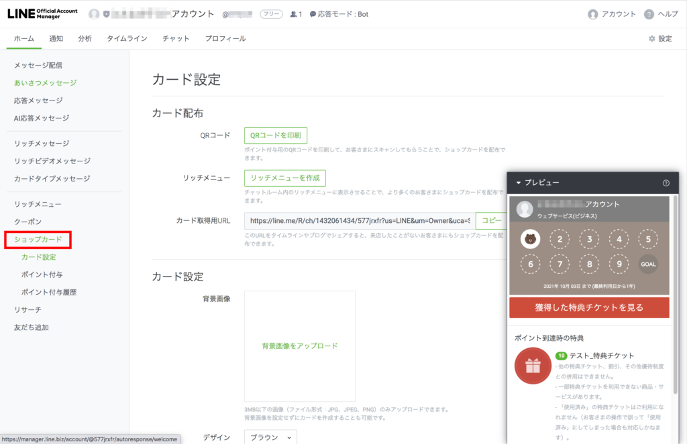
（２）ここから色々設定していきますが、最初に注意点から説明しますね！このショップカード、一度作成すると内容を変更することはできません（削除はできますが、その時すでにショップカードでお客様がポイントなど貯めていた場合、お客様のポイントがゼロになってしまいます）。この点、重要ですのでお気をつけください。
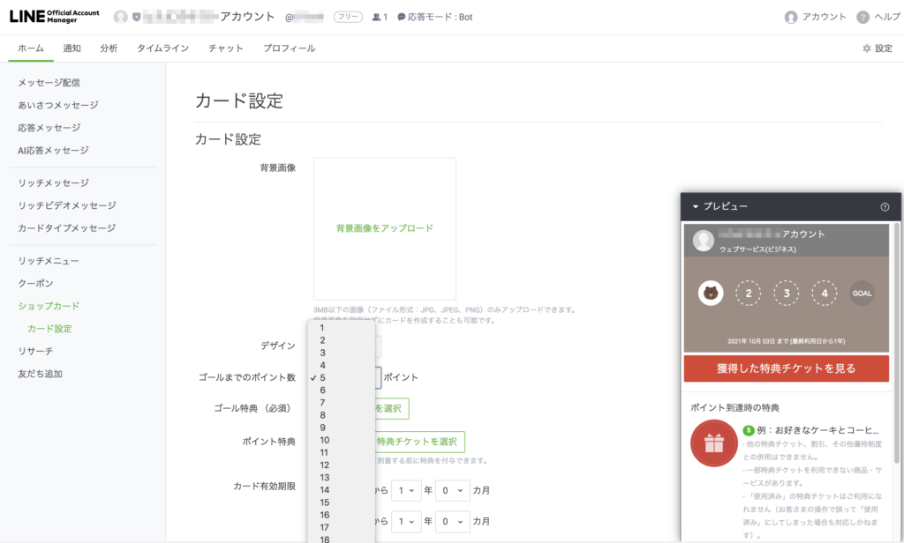
（３）では、実際に作っていきましょう。まず、ショップカードのデザインをプルダウンメニューから選択します。好きな背景画像をアップロードして使用することもできます。スマホの画面上でどう見えるかが右下に表示されていますが、ここで表示されている名前と肩書きは、LINE公式アカウントを開設したときのものが反映されています。

（４）「ゴールまでのポイント数」を設定します。お客様がいくらポイントを貯めれば特典を得られるか、という具体的なポイント数の設定です。
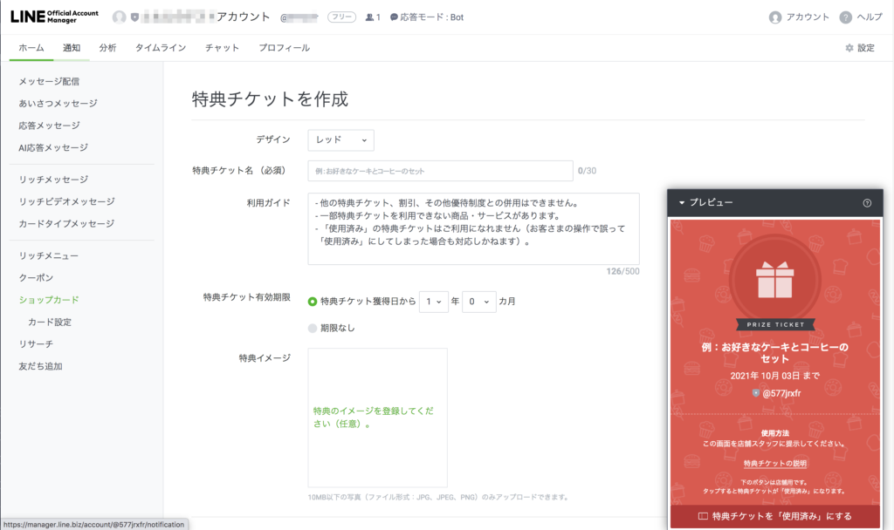
（５）次に、「ゴールの特典（必須）」の右にある「特典チケットを選択」をクリックすると、新しく特典チケット作成のための画面が開きます。まずデザインのブルダウンメニューからデザインを選びます（あらかじめ用意した画像を利用することもできます）。「特典チケット名（必須）」を入力し、利用ガイドの内容も確認しておいてください。必要であれば、利用ガイドの内容を打ち替えて変更します。
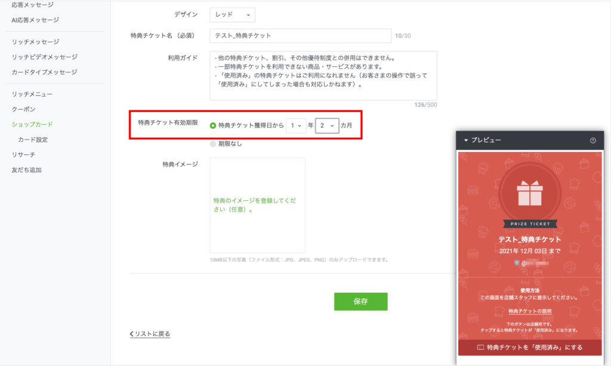
（６）「特典チケット有効期限」を設定します。ショップやサロン運営者なら、今まで紙のカードでこのようなことをやってこられた方も多いでしょうね。ここでは、たとえば10ヶ月間とか1年とか、もしくは無期限も選べます。
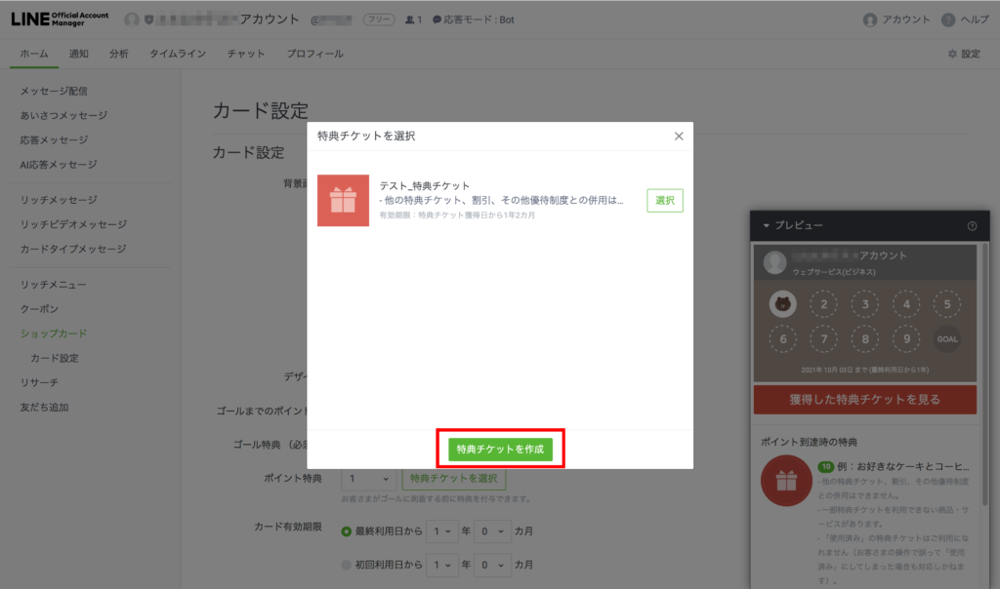
（７）設定した特典チケットを上のボタンで保存します！これで特典チケットは完成です。作成した特典チケットを選択し、引き続きショップカードの作成を進めます。
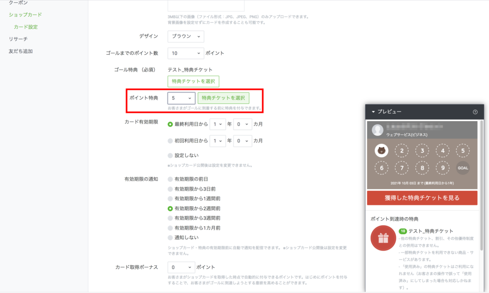
（８）ゴール特典（必須）の下に「ポイント特典」と表示されています。これは、設定した特典チケットのゴールにたどり着くまでに、たとえばポイントを半分貯めた時点でもらえる「小ゴール特典」とでもいいましょうか。。。全部ポイントを貯めるまでに、一度ある程度のポイント数（上の画面では5ポイントで設定しています）を貯めた人のために用意してあげる特典のことです。これは絶対用意しなければいけないものではないですが、もし作ってあげるのなら、もう一度（7）と同じ手順でポイント特典の内容を設定します。
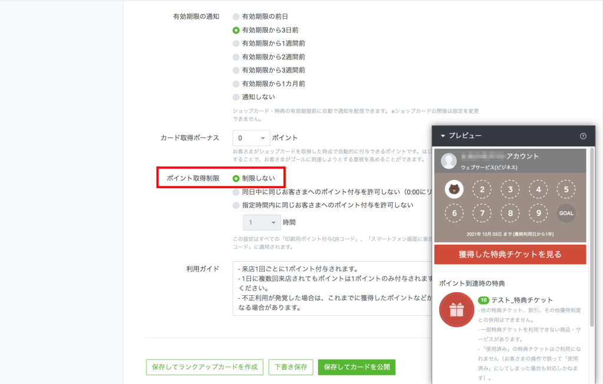
（９）「カードの有効期限」についても、ご自分のお店にあわせて設定してください。ショップカード自体を無期限で使えるように設定したい場合は、「設定しない」を選びます。
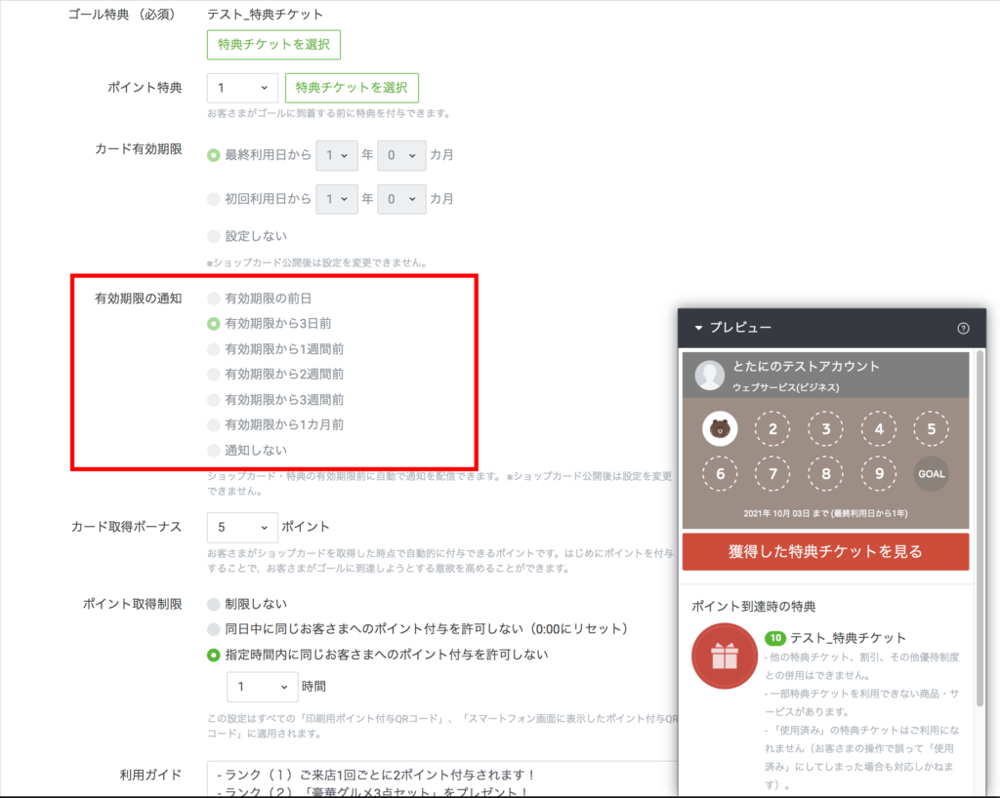
（１０）「有効期限の通知」は、LINE公式アカウントならではの便利な機能ですね！ショップカードの有効期限が切れる前（この場合3日前に設定）に、お客様に「もうすぐ有効期限が切れますよ」というお知らせが自動的に配信されます。紙のショップカードだと、よくお客様がショップカードを持っていること自体忘れてしまっていたり、失くされてしまうケースが多いです。スマホにショップカードが入っていれば、そういう問題も防げます！
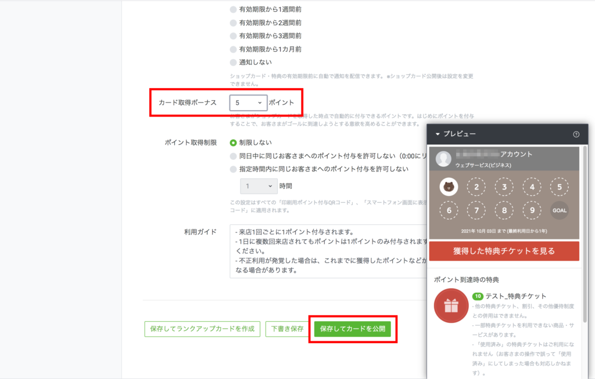
（１１）「カード取得ボーナス」は、お客様がショップカードを取得しただけでプレゼントできるポイントです。これをつけるとつけないかで、ショップカードに誘導できる率が全然違ってくるので、ここはちゃんと設定しておきましょう。
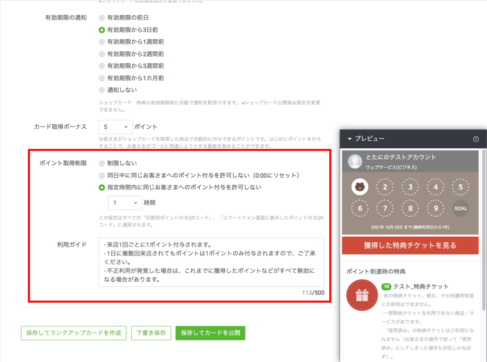
（１２）「ポイント取得制限」とは、ショップカードの不正利用を防ぐための機能です。「同日中に同じお客様へのポイント付与を許可しない（0:00にリセット）」はかなり強めの制限ですね。ポイント欲しさに、同じ日にもう一度来て「ポイントちょうだい！」というお客様に対して、「不正をしたら今まで貯めたポイントもゼロになりますよ？」ということになります。き、きついなー。。。（汗）「指定時間内に同じお客様へのポイント付与を許可しない」のほうがオススメな気がします。
下の「利用ガイド」には、最初から雛形の文章が入っています。内容を確認し、問題なければ「保存してカードを公開」となります！
（１３）ショップカードの作り方はこれでご理解いただけたかと思うのですが、よくいただく質問に「どうやってお客様にポイントを貯めさせるの？」というものがあります。これは、ポイントごとにQRコードを作成することができ、それをお客様が提示すればショップカードにポイントが溜まっていく仕掛けになっています。紙のカードや、独自のアプリを構築されている企業もありますが、LINE公式アカウントなら簡単・確実に集客につなげるショップカードを作ることができる、ということになります。
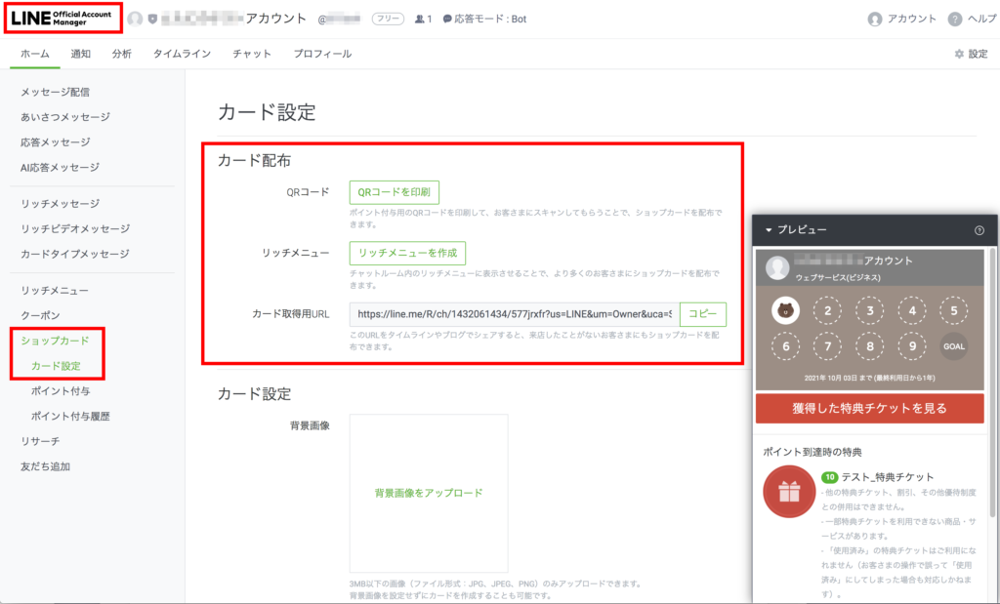
（１４）では、実際に作ったショップカードをどのようにお客様に提供するのかを、確認していきます。ショップカードができたら、一度「LINE Official Account Manager」に戻り、左のバーから「ショップカード」を選択して、「カード設定」を選択します。すると、カードを取得してもらうためのQRコード欄などがあります（これを印刷しておいてお客様の購入金額などに応じてそれを提示し、スマホで読み込んでいただきます）。また、カード取得用URLはブログやFacebookなど各種SNSに掲載して宣伝することができます。
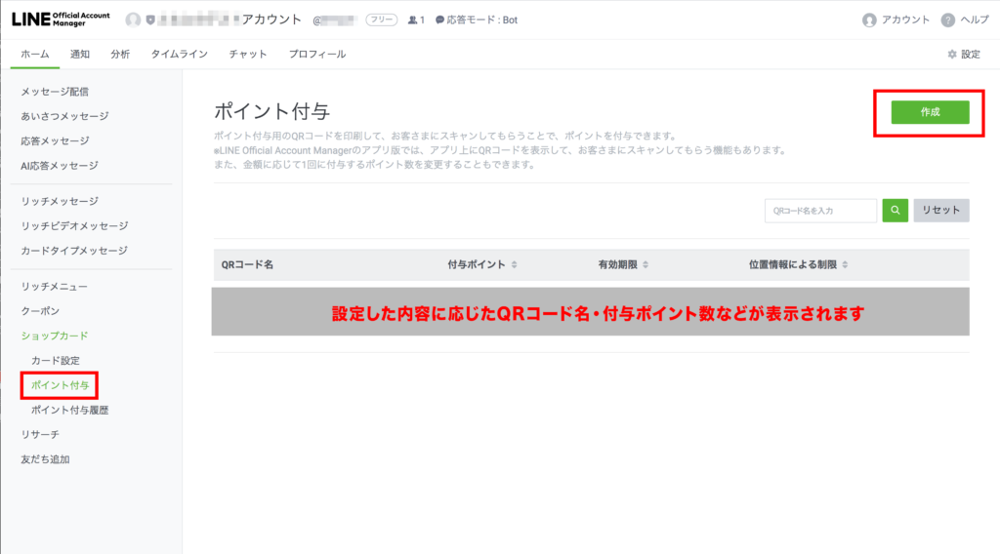
（１５）「ポイント付与」をクリックすると、設定した内容に応じたQRコード名・付与ポイント数などが表示されますので、クリックしてください。
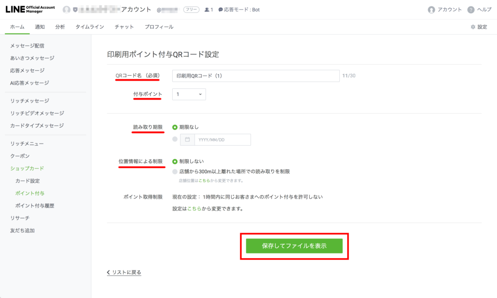
（１６）各QRコードに名前をつけ、何ポイント付与するのかなど、詳細を設定します。赤いアンダーラインを引いた各項目を設定したら、「保存してファイルを表示」をクリックします。
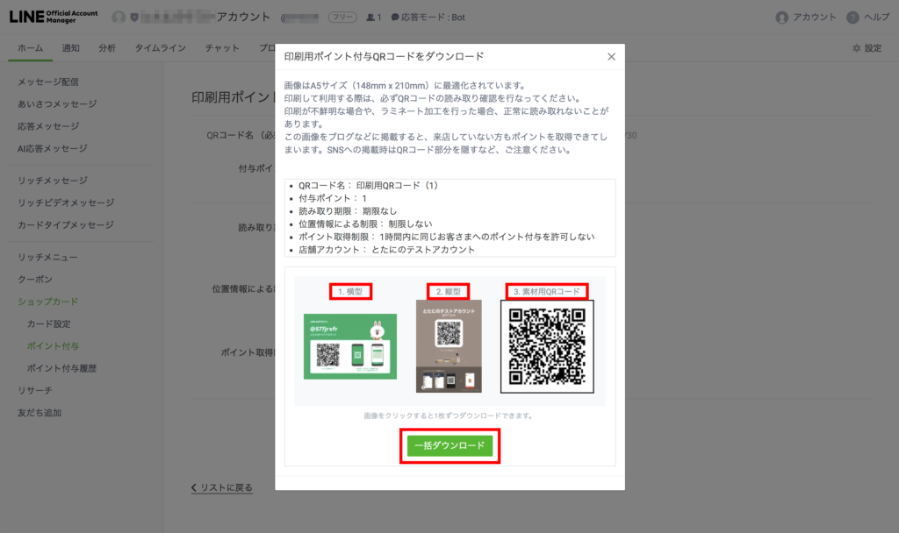
（１７）印刷用QR印刷用コードが表示されました！左が印刷用のQRコード、真ん中はリッチメニュー用、右がブログやSNS、チラシなどの印刷物に載せるQRコードです。「一括ダウンロード」をクリックして、パソコンにダウンロードし、目的に応じて使い分けます。
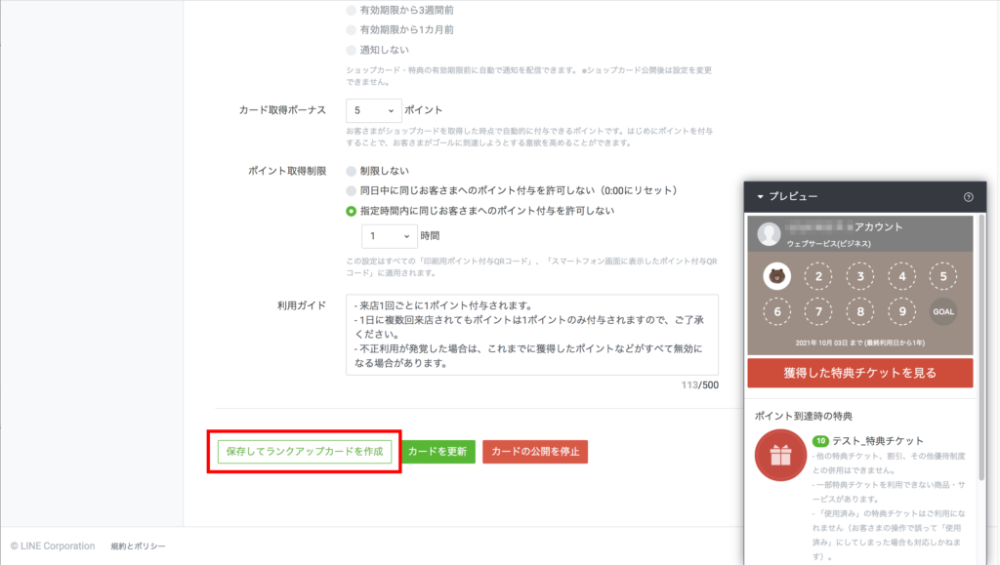
（１８）さらに、そのまま画面を下にスクロールすると「保存してランクアップカードを作成」というボタンがあり、こちらをクリックすると、ポイントを満タン貯めていただいたお客様にランクアップしたカードを提供することができます。紙のカードだと、ポイントを全部貯めたら、また同じカードをもう一度お渡しして一から同じことを繰り返すことになりますが、この「ランクアップ」機能を使うことで、ポイントを貯めてくれたお客様にワンランク上の特典を提供する新しいポイントカードを提供することができます！
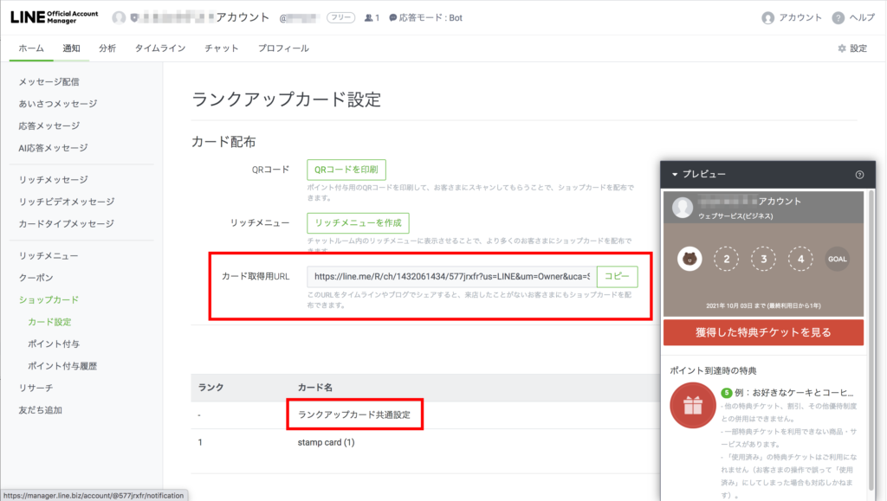
ランクアップしたカードも、（３）の手順どおり一から設定していきます。
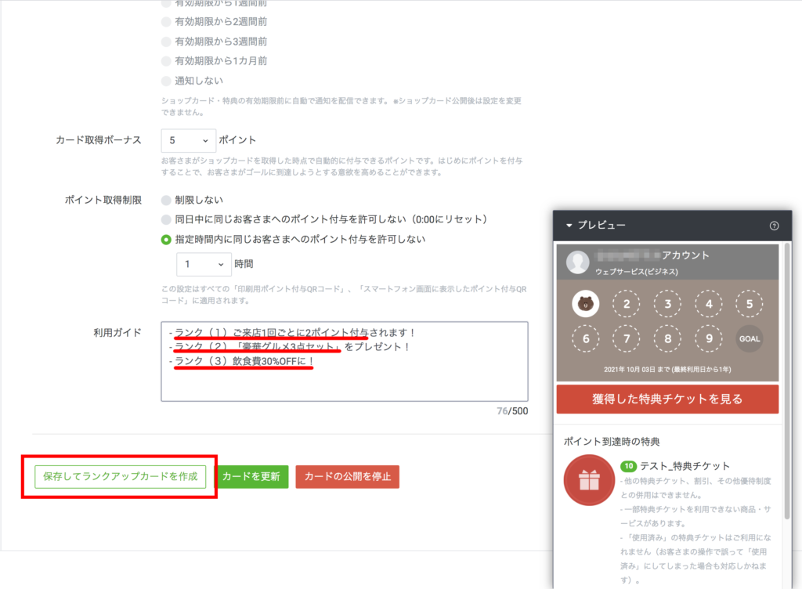
具体的には、利用ガイド欄で最初のショップカード利用者よりも好条件な特典を設定するのがポイント！ ここではランク（１）〜（３）と書いていますが、お店によっては「シルバーランク」「ブロンズランク」「ゴールドランク」というような名前をつけて、お客様が今どのランクなのかを意識してもらうやり方も有効です。期間やポイント数など、あらためてひとつずつ設定していきしょう。
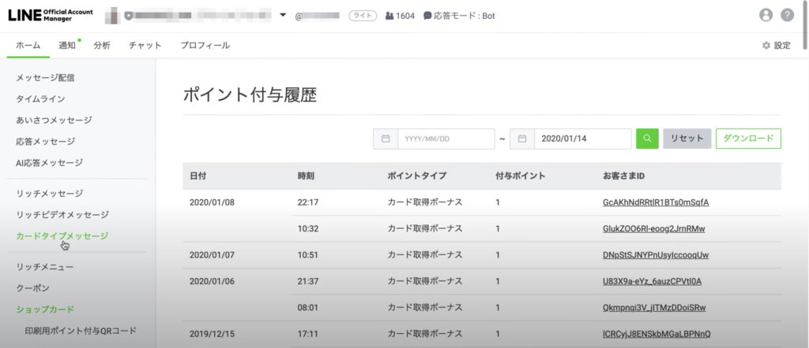
最後に、「ポイント付与履歴」をみていきましょう。このような形で、誰にどのようなポイントが付与されたか、一覧で確認することができます。最初は「カード取得ボーナス」ばかりずらっと並ぶことになりますが、お客様がポイントを貯めていくにつれ、ここにその履歴が表示されるようになります。今まで紙でポイントカードを管理されていたお店や企業にとっては、コストカットも含めて大変便利なツールになっていますので、ぜひ利用してみてくださいね！
「もっと詳しく知りたい！」「広告の作り方を教えてほしい」など、サポートが必要な方はぜひお気軽にご相談くださいね！今なら相談無料なので、LINE公式アカウントとは？というような初歩的な内容から、詳しい運営方法までアドバイスさせていただきます。
まずはLINE公式アカウントを開設しましょう！
●LINE公式アカウントの開設方法はこちら
●LINE公式アカウントをオススメする理由はこちら
●LINE公式アカウントでできることはこちら
●Lステップでできることはこちら